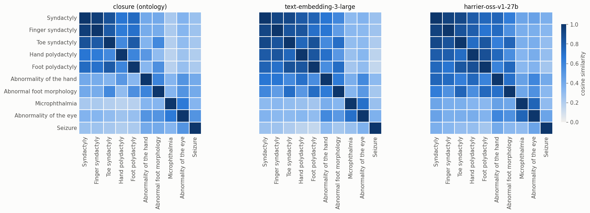

Ontology Term Embeddings in OAK
This notebook introduces the EmbeddingProviderInterface, which gives direct access to vector embeddings of ontology terms as numpy matrices and pandas DataFrames, along with operations built on them (similarity, nearest neighbours, text search, and best-match comparison of term sets).
Backends:
Adapter |
Models |
Notes |
|---|---|---|
|
precomputed LLM embeddings hosted by OLS |
several models, 512-d (PCA-reduced); cached locally |
|
any embedding model supported by the llm library |
embeds labels (or labels + definitions) on demand; cached locally |
any adapter that can compute ancestors (e.g. |
|
each term is a multi-hot vector of its reflexive ancestors |
The closure model is how “classic” ontology semantic similarity looks when written as vectors. Jaccard similarity of closure vectors is the familiar ancestor-set Jaccard, so classic and learned embeddings can be compared with exactly the same code.
[1]:
import warnings
warnings.filterwarnings("ignore", category=UserWarning, module="eutils")
warnings.filterwarnings("ignore", category=DeprecationWarning)
import matplotlib.pyplot as plt
import seaborn as sns
# reference palette (categorical slots in fixed order; sequential blue ramp)
BLUE, ORANGE, AQUA = "#2a78d6", "#eb6834", "#1baf7a"
INK, INK2, GRID, SURFACE = "#0b0b0b", "#52514e", "#e4e3df", "#fcfcfb"
plt.rcParams.update({
"figure.facecolor": SURFACE, "axes.facecolor": SURFACE, "savefig.facecolor": SURFACE,
"axes.edgecolor": GRID, "axes.labelcolor": INK2, "axes.titlecolor": INK,
"axes.grid": True, "grid.color": GRID, "grid.linewidth": 0.6,
"axes.spines.top": False, "axes.spines.right": False,
"xtick.color": INK2, "ytick.color": INK2, "text.color": INK,
"font.size": 10, "axes.titlesize": 11, "figure.dpi": 110,
})
SEQUENTIAL = sns.blend_palette(["#f0efec", "#86b6ef", "#2a78d6", "#0d366b"], as_cmap=True)
Connecting to OLS
OLS serves embeddings for every class it indexes, for several models:
[2]:
from oaklib import get_adapter
ols = get_adapter("ols:hp")
ols.embedding_models()
[2]:
['harrier-oss-v1-27b_pca512',
'llama-embed-nemotron-8b_pca512',
'text-embedding-3-large_pca512',
'text-embedding-3-small_pca512']
Vectors as numpy and pandas
entity_embeddings returns the CURIEs that have vectors and a matrix with one row per CURIE. Vectors are cached in a local sqlite database (under ~/.data/oaklib/embeddings), so OLS is only asked once per term and model.
[3]:
hand_terms = [
"HP:0001159", # Syndactyly
"HP:0006101", # Finger syndactyly
"HP:0001770", # Toe syndactyly
"HP:0001161", # Hand polydactyly
"HP:0001829", # Foot polydactyly
"HP:0001155", # Abnormality of the hand
"HP:0001760", # Abnormal foot morphology
"HP:0000568", # Microphthalmia
"HP:0000478", # Abnormality of the eye
"HP:0001250", # Seizure
]
ids, matrix = ols.entity_embeddings(hand_terms)
matrix.shape
[3]:
(10, 512)
[4]:
ols.embeddings_dataframe(hand_terms, model="text-embedding-3-large_pca512").iloc[:, :6].round(3)
[4]:
| 0 | 1 | 2 | 3 | 4 | 5 | |
|---|---|---|---|---|---|---|
| id | ||||||
| HP:0001159 | 0.096 | -0.007 | -0.201 | -0.119 | -0.137 | 0.003 |
| HP:0006101 | 0.064 | -0.042 | -0.216 | -0.085 | -0.159 | 0.000 |
| HP:0001770 | 0.091 | 0.001 | -0.189 | -0.122 | -0.142 | -0.009 |
| HP:0001161 | 0.068 | -0.057 | -0.183 | -0.096 | -0.152 | -0.024 |
| HP:0001829 | 0.084 | -0.004 | -0.178 | -0.112 | -0.172 | -0.007 |
| HP:0001155 | 0.108 | -0.077 | -0.241 | -0.038 | -0.166 | -0.016 |
| HP:0001760 | 0.109 | -0.001 | -0.228 | -0.073 | -0.172 | -0.020 |
| HP:0000568 | 0.087 | -0.016 | -0.254 | -0.052 | -0.169 | 0.053 |
| HP:0000478 | 0.105 | -0.047 | -0.241 | -0.033 | -0.142 | 0.003 |
| HP:0001250 | 0.064 | -0.076 | -0.236 | -0.020 | -0.005 | 0.030 |
Pairwise similarity
Scores are cosine similarities computed locally from the vectors. OLS’s own similarity endpoints report (1 + cosine) / 2; OAK converts these back to cosine so that all scores are on the same scale (#915).
Different models disagree substantially, even on the same pair of terms:
[5]:
import pandas as pd
pairs = [
("HP:0001159", "HP:0006101"), # syndactyly vs finger syndactyly (subclass)
("HP:0006101", "HP:0001770"), # finger vs toe syndactyly (siblings)
("HP:0001159", "HP:0001161"), # syndactyly vs hand polydactyly
("HP:0001159", "HP:0001250"), # syndactyly vs seizure (unrelated)
]
labels = dict(ols.labels({t for p in pairs for t in p}))
rows = []
for model in ols.embedding_models():
for s, o in pairs:
rows.append({"model": model, "pair": f"{labels[s]} / {labels[o]}",
"cosine": ols.embedding_similarity(s, o, model=model)})
pd.DataFrame(rows).pivot(index="pair", columns="model", values="cosine").round(3)
[5]:
| model | harrier-oss-v1-27b_pca512 | llama-embed-nemotron-8b_pca512 | text-embedding-3-large_pca512 | text-embedding-3-small_pca512 |
|---|---|---|---|---|
| pair | ||||
| Finger syndactyly / Toe syndactyly | 0.853 | 0.906 | 0.846 | 0.854 |
| Syndactyly / Finger syndactyly | 0.939 | 0.875 | 0.922 | 0.871 |
| Syndactyly / Hand polydactyly | 0.806 | 0.648 | 0.815 | 0.724 |
| Syndactyly / Seizure | 0.369 | 0.366 | 0.268 | 0.392 |
Note that absolute cosine values are not comparable across models: each model has its own “background” similarity for unrelated terms. Rankings within a model are what matter.
Nearest neighbours and text search
nearest_entities uses the OLS vector index; results can come from any ontology in OLS (useful for finding mappings). Obsolete classes are filtered out.
[6]:
model = "text-embedding-3-large_pca512"
pd.DataFrame(
[(c, ols.label(c), round(score, 3)) for c, score in ols.nearest_entities("HP:0001159", limit=8, model=model)],
columns=["id", "label", "cosine"],
)
[6]:
| id | label | cosine | |
|---|---|---|---|
| 0 | HP:0006101 | Finger syndactyly | 0.922 |
| 1 | HP:0001770 | Toe syndactyly | 0.909 |
| 2 | HP:0010554 | Cutaneous finger syndactyly | 0.868 |
| 3 | HP:0010704 | 1-2 finger cutaneous syndactyly | 0.859 |
| 4 | HP:0010709 | 2-4 finger cutaneous syndactyly | 0.857 |
| 5 | HP:0001233 | 2-3 finger cutaneous syndactyly | 0.850 |
| 6 | HP:0010713 | 1-5 toe syndactyly | 0.844 |
| 7 | HP:0006097 | 3-4 finger osseus syndactyly | 0.842 |
Free-text queries are embedded by OLS. Only some OLS models can embed text; by default the first such model is used, and results are restricted to the adapter’s ontology:
[7]:
pd.DataFrame(
[(c, ols.label(c), round(score, 3)) for c, score in ols.nearest_entities_to_text("webbed fingers", limit=5)],
columns=["id", "label", "cosine"],
)
[7]:
| id | label | cosine | |
|---|---|---|---|
| 0 | HP:0001159 | Syndactyly | 0.821 |
| 1 | HP:0010704 | 1-2 finger cutaneous syndactyly | 0.813 |
| 2 | HP:0006101 | Finger syndactyly | 0.711 |
| 3 | HP:0010554 | Cutaneous finger syndactyly | 0.696 |
| 4 | HP:0010709 | 2-4 finger cutaneous syndactyly | 0.686 |
Classic semantic similarity as vectors: the closure model
Any adapter that can compute ancestors provides the closure model. Each term is a multi-hot vector over the union of the ancestors of the terms being encoded:
[8]:
from oaklib.utilities.embeddings.closure_embeddings import closure_embeddings
hp = get_adapter("sqlite:obo:hp")
ids, vocab, m = closure_embeddings(hp, hand_terms[:3])
closure_df = pd.DataFrame(m.astype(int), index=[hp.label(i) for i in ids], columns=[hp.label(v) for v in vocab])
print(closure_df.shape)
# show the dimensions (ancestors) that are not shared by all three terms
closure_df.loc[:, closure_df.sum() < 3]
(3, 16)
[8]:
| Abnormal foot morphology | Toe syndactyly | Abnormal toe morphology | Abnormality of the lower limb | Finger syndactyly | |
|---|---|---|---|---|---|
| Syndactyly | 0 | 0 | 0 | 0 | 0 |
| Finger syndactyly | 0 | 0 | 0 | 0 | 1 |
| Toe syndactyly | 1 | 1 | 1 | 1 | 0 |
Jaccard similarity over closure vectors is identical to the ancestor-set Jaccard computed by the SemanticSimilarityInterface:
[9]:
from oaklib.datamodels.vocabulary import IS_A
for s, o in pairs:
vec = hp.embedding_similarity(s, o, model="closure", metric="jaccard")
classic = hp.pairwise_similarity(s, o, predicates=[IS_A]).jaccard_similarity
print(f"{labels[s]:>20} / {labels[o]:<20} vector={vec:.4f} classic={classic:.4f}")
Syndactyly / Finger syndactyly vector=0.9167 classic=0.9167
Finger syndactyly / Toe syndactyly vector=0.6875 classic=0.6875
Syndactyly / Hand polydactyly vector=0.4762 classic=0.4762
Syndactyly / Seizure vector=0.1429 classic=0.1429
Comparing the similarity structure of models
Below are all-by-all similarity matrices for the same ten terms: ontology closure (cosine) versus two OLS-hosted LLM embedding models. The closure model only sees the ontology graph; the LLM models only see the text of the terms.
[10]:
import numpy as np
short = {t: ols.label(t) for t in hand_terms}
panels = [
("closure (ontology)", hp, "closure"),
("text-embedding-3-large", ols, "text-embedding-3-large_pca512"),
("harrier-oss-v1-27b", ols, "harrier-oss-v1-27b_pca512"),
]
fig, axes = plt.subplots(1, 3, figsize=(16, 5.2), sharey=True)
for ax, (title, adapter, model) in zip(axes, panels):
m = adapter.embedding_similarity_matrix(hand_terms, model=model)
m = m.rename(index=short, columns=short)
sns.heatmap(m, ax=ax, cmap=SEQUENTIAL, vmin=0, vmax=1, square=True,
cbar=ax is axes[-1], cbar_kws={"label": "cosine similarity", "shrink": 0.8},
linewidths=1, linecolor=SURFACE)
ax.set_title(title)
ax.grid(False)
ax.tick_params(length=0)
fig.tight_layout()

All three put the limb terms in one block, and the eye terms and seizure apart from it. They differ in the details. The closure model scores the general terms (“Abnormality of the hand”, “Abnormal foot morphology”) as only moderately similar to their own descendants, because those descendants have many extra ancestors. The LLM models place them closer. The two LLM models also have very different “background” similarity between unrelated terms (compare the Seizure row). This is why absolute cosine thresholds do not transfer between models; rankings within a model are more meaningful.
Comparing sets of terms
embedding_termset_similarity compares two sets of terms (e.g. a patient profile and a disease profile) by best-match average, returning the same TermSetPairwiseSimilarity object as classic semantic similarity:
[11]:
patient = ["HP:0006101", "HP:0000568"] # finger syndactyly, microphthalmia
disease = ["HP:0001159", "HP:0000478", "HP:0001250"] # syndactyly, eye abnormality, seizure
sim = ols.embedding_termset_similarity(patient, disease, model="text-embedding-3-large_pca512", labels=True)
print("best match average:", round(sim.average_score, 3))
for bm in sim.subject_best_matches.values():
print(f" {bm.match_source_label} -> {bm.match_target_label} ({bm.score:.3f})")
best match average: 0.705
Finger syndactyly -> Syndactyly (0.922)
Microphthalmia -> Abnormality of the eye (0.703)
LLM embeddings computed on demand
The llm: adapter wraps another adapter and embeds term text with any model supported by the llm library (OpenAI, sentence-transformers via plugins, …). The text template is configurable, so you can compare label-only with label + definition embeddings. This needs an API key (or a local model plugin), so it is not run here:
llm_adapter = get_adapter("llm:sqlite:obo:hp")
llm_adapter.embedding_model_id = "text-embedding-3-small"
llm_adapter.embedding_text_template = "{label}: {definition}"
ids, matrix = llm_adapter.entity_embeddings(hand_terms)
Command line
The same operations are available from runoak:
runoak -i ols:hp embedding-models
runoak -i ols:hp embeddings .desc//p=i HP:0001155 -m text-embedding-3-large_pca512 -o hand.tsv
runoak -i ols:hp nearest-entities HP:0001159 -L 5
runoak -i ols:hp nearest-entities --text "webbed fingers"
runoak -i ols:hp embedding-similarity HP:0001159 HP:0006101 @ HP:0001770 HP:0001250
runoak -i sqlite:obo:hp embedding-similarity -m closure --metric jaccard HP:0001159 @ HP:0001770
See also
Subsumption recapitulation: do LLM embeddings encode the ontology hierarchy?
Phenotype profile matching: retrieving diseases from noisy phenotype profiles with classic and embedding-based similarity.